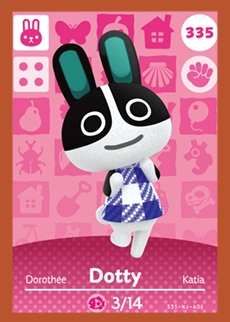
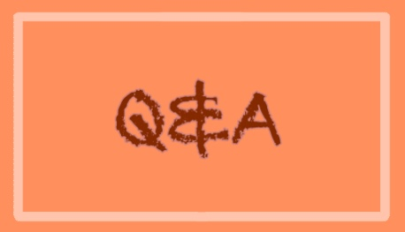

Hello! My name is Nastya, and here will be a little of my biography! I am 14 years old, I live in Uzhgorod, I love the color orange, my favorite fruit is oranges, and my favorite berry is strawberries. In my free time I like to ride on a swing while listening to music with my headphones. I’m not very financially literate, so when my parents give me money, I usually spend it on some small figurines that make up my entire room.. (that’s why I have a lot of dust) I have 3 consoles, 2 Nintendo Switches and one PlayStation 4 which my brother took. I play them very rarely, and if I have time, i play animal crossing. Fun fact! In this game every single character is born on every day of any month, and if you are interested you can find the animal that was born on your birthday! Here is a character who was born on the same day as me:
 